Series和DataFrame
学习目标
- 掌握Series的常用属性及方法
- 掌握DataFrame的常用属性及方法
- 掌握DataFrame行列标签的设置
1. Series 详解
Series是 pandas 中用来存储一维数据的容器。
1.1 创建 Series
1）创建 Series 的最简单方法是传入一个Python列表
- 如果传入的数据类型是统一的数字，那么最终的 dtype 类型是int64
- 如果传入的数据类型是统一的字符串，那么最终的 dtype 类型是object
- 如果传入的数据类型是多种类型，那么最终的 dtype 类型也是object
s = pd.Series(['banana', 42])
print(s)
print(type(s))
s = pd.Series(['banana', 'apple'])
print(s)
print(type(s))
s = pd.Series([50, 42])
print(s)
print(type(s))
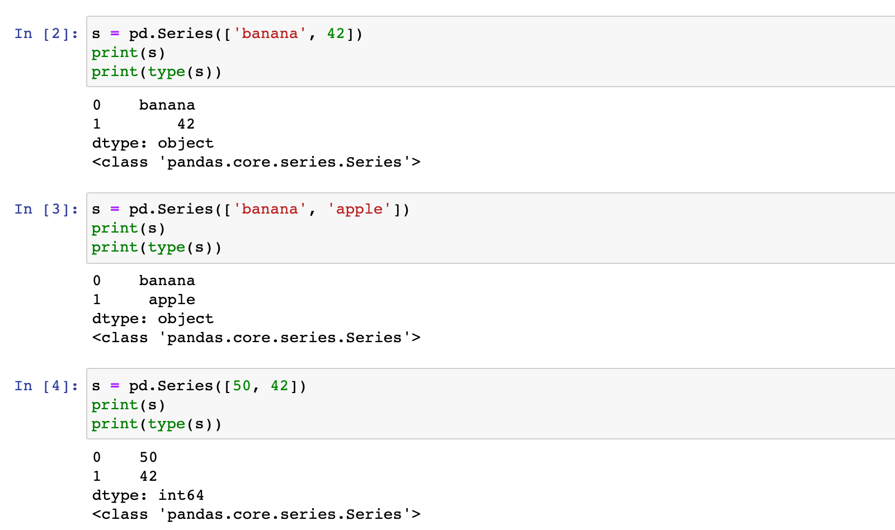
注意：上面的结果中，左边显示的0，1是 Series 的行标签，默认为0，1，2，3...
2）创建 Series 时，也可以通过 index 参数来指定行标签
s = pd.Series(['smart', 18], index=['name', 'age'])
print(s)
print(type(s))
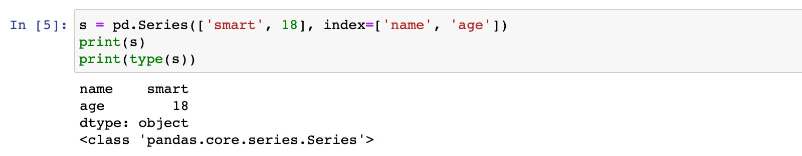
1.2 Series 常用操作
常用属性和方法：
| 属性或方法 | 说明 |
|---|---|
s.shape |
查看 Series 数据的形状 |
s.size |
查看 Series 数据的个数 |
s.index |
获取 Series 数据的行标签 |
s.values |
获取 Series 数据的元素值 |
s.keys() |
获取 Series 数据的行标签，和 s.index 效果相同 |
s.loc[行标签] |
根据行标签获取 Series 中的某个元素数据 |
s.iloc[行位置] |
根据行位置获取 Series 中的某个元素数据 |
s.dtypes |
查看 Series 数据元素的类型 |
示例演示：
1）加载 scientists.csv 数据集，并获取 Age 列的数据
scientists = pd.read_csv('./data/scientists.csv')
scientists
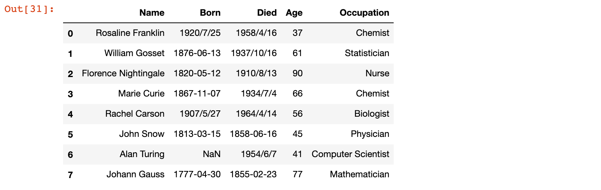
# 并获取 Age 列的数据
age_series = scientists['Age']
print(age_series)
print(type(age_series))
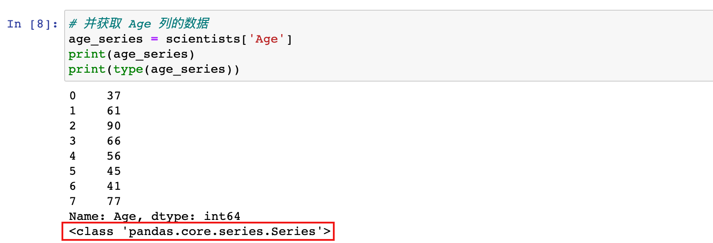
2）常用属性和方法演示
age_series.shape
age_series.size
age_series.index
age_series.values
age_series.keys()
age_series.loc[1]
age_series.iloc[1]
age_series.dtypes
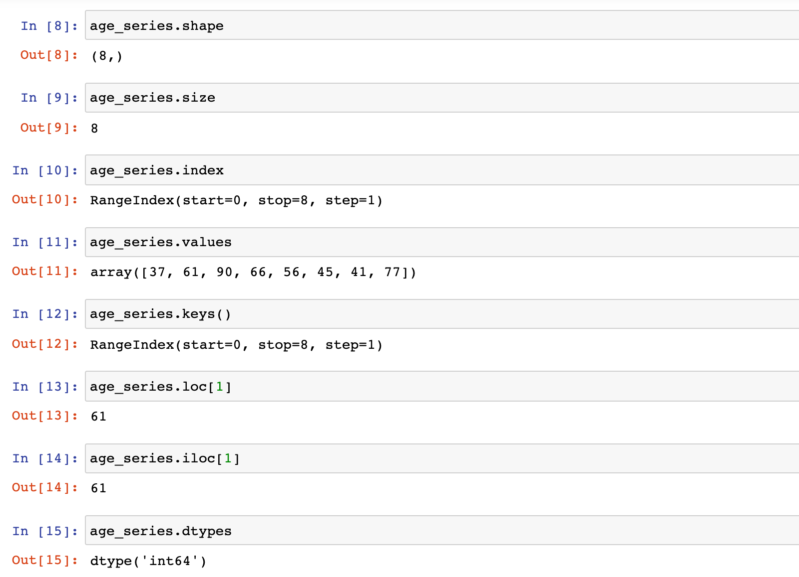
常用统计方法：
| 方法 | 说明 |
|---|---|
s.mean() |
计算 Series 数据中元素的平均值 |
s.max() |
计算 Series 数据中元素的最大值 |
s.min() |
计算 Series 数据中元素的最小值 |
s.std() |
计算 Series 数据中元素的标准差 |
s.value_counts() |
统计 Series 数据中不同元素的个数 |
s.count() |
统计 Series 数据中非空(NaN)元素的个数 |
s.describe() |
显示 Series 数据中元素的各种统计值 |
示例演示：
1）mean、max、min、std统计方法演示
# 计算年龄的平均值
age_series.mean()
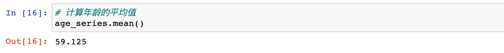
# 计算年龄的最大值
age_series.max()
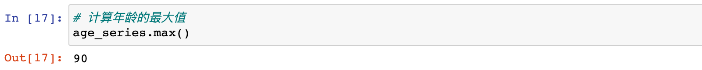
# 计算年龄的最小值
age_series.min()
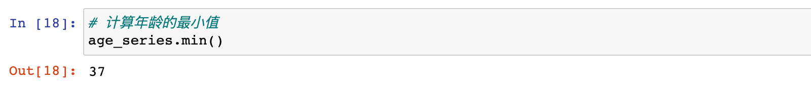
# 计算年龄的标准差
age_series.std()
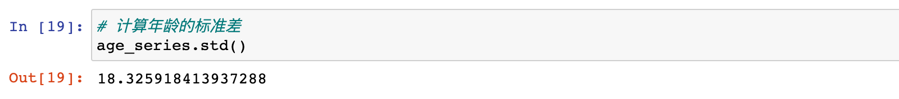
2）value_counts 统计方法演示
# 获取职业这一列数据
occupation_series = scientists['Occupation']
print(occupation_series)
occupation_series.value_counts()
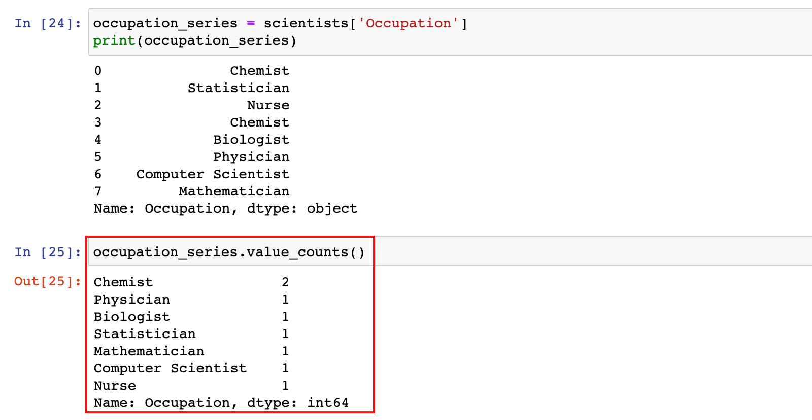
3）count 统计方法演示
# 统计 Born 这一列非空元素的个数
scientists['Born'].count()
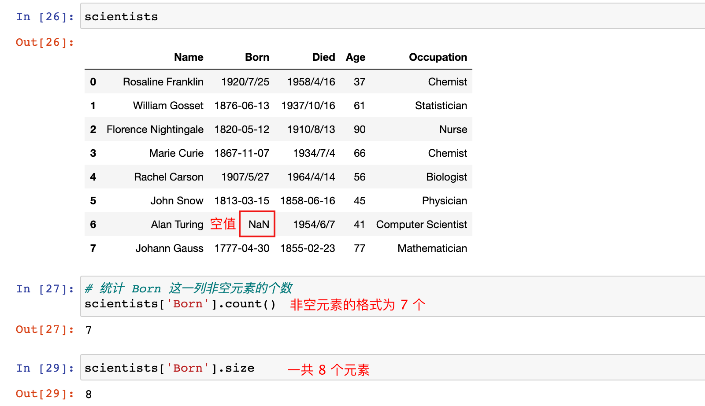
4）describe 统计方法演示
# age_series 是数值型数据
age_series.describe()
# occupation_series 是非数值型数据
occupation_series.describe()
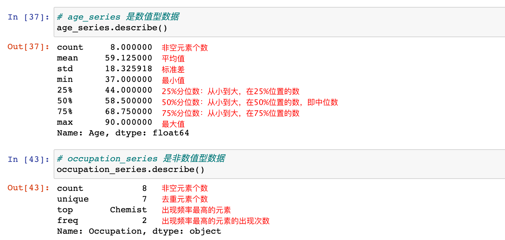
Series方法(备查)：
| 方法 | 说明 |
|---|---|
| append | 连接两个或多个Series |
| corr | 计算与另一个Series的相关系数 |
| cov | 计算与另一个Series的协方差 |
| describe | 计算常见统计量 |
| drop_duplicates | 返回去重之后的Series |
| equals | 判断两个Series是否相同 |
| get_values | 获取Series的值，作用与values属性相同 |
| hist | 绘制直方图 |
| isin | Series中是否包含某些值 |
| min | 返回最小值 |
| max | 返回最大值 |
| mean | 返回算术平均值 |
| median | 返回中位数 |
| mode | 返回众数 |
| quantile | 返回指定位置的分位数 |
| replace | 用指定值代替Series中的值 |
| sample | 返回Series的随机采样值 |
| sort_values | 对值进行排序 |
| to_frame | 把Series转换为DataFrame |
| unique | 去重返回数组 |
1.3 bool 索引
Series 支持 bool 索引，可以从 Series 获取 bool 索引为 True 的位置对应的数据。
bool_values = [False, True, True, True, False, False, False, True]
age_series[bool_values]
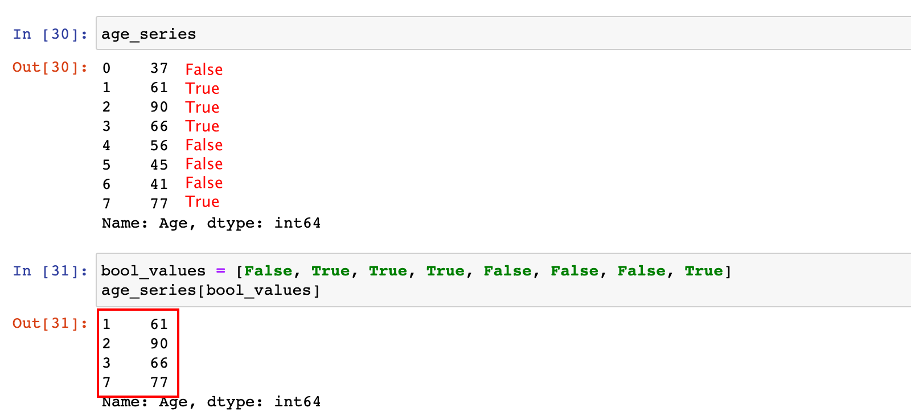
应用：从 age_series 中删选出年龄大于平均值的数据.
# 应用：从 age_series 中删选出年龄大于平均值的数据.
age_series[age_series>age_series.mean()]
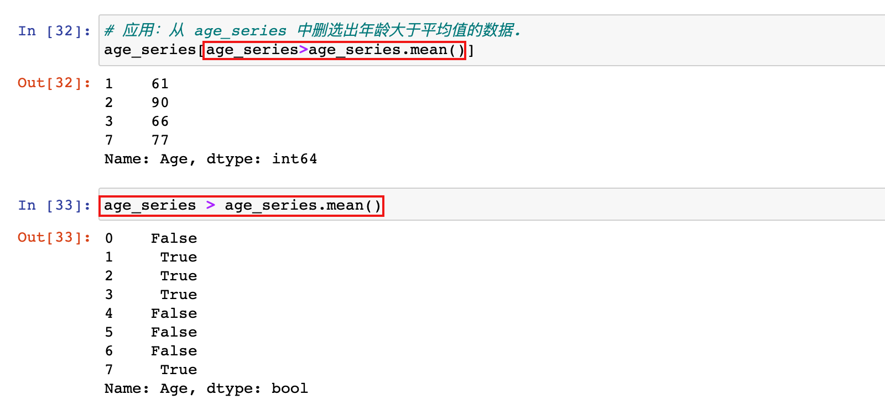
1.4 Series 运算
| 情况 | 说明 |
|---|---|
Series 和 数值型数据运算 |
Series 中的每个元素和数值型数据逐一运算，返回新的 Series |
Series 和 另一 Series 运算 |
两个 Series 中相同行标签的元素分别进行运算，若不存在相 同的行标签，计算后的结果为 NaN，最终返回新的 Series |
Series 和 数值型数据运算：
# 加法
age_series + 100
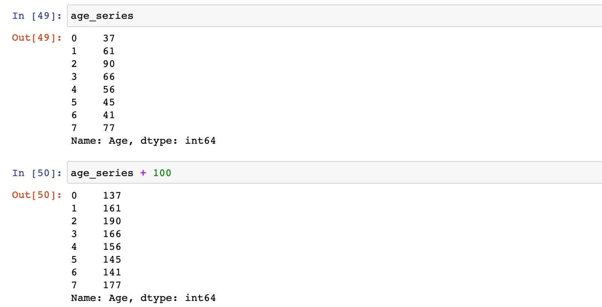
# 乘法
age_series * 2
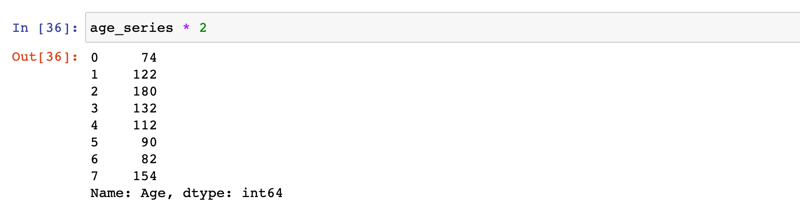
Series 和 另一 Series 运算：
# 加法
age_series + age_series
# 乘法
age_series * age_series
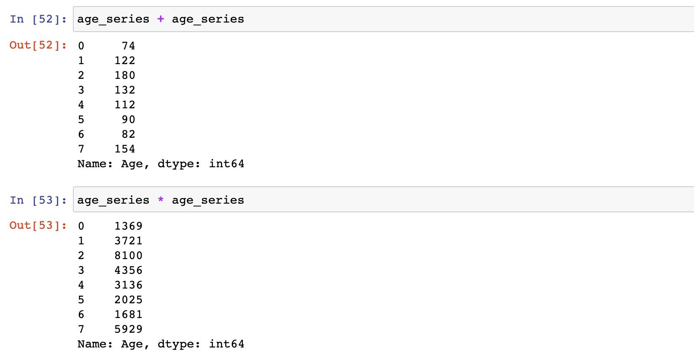
# 创建新的 Series 数据
new_series = pd.Series([1, 100])
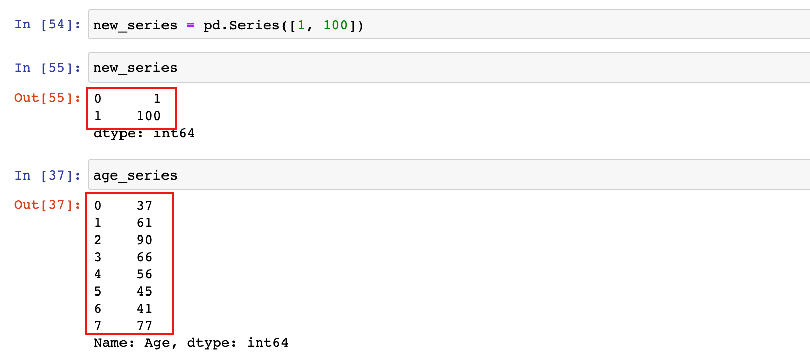
注意：age_series 中的一些元素在 new_series 中不存在相同行标签的数据
# 两个 Series 相加
age_series + new_series
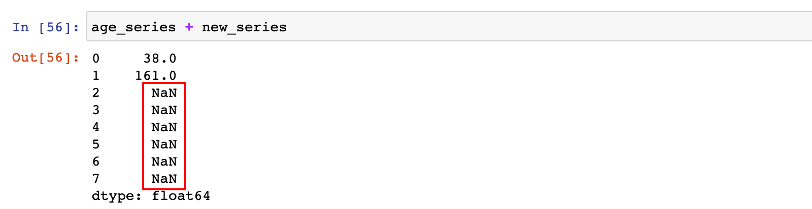
# 两个 Series 相乘
age_series * new_series
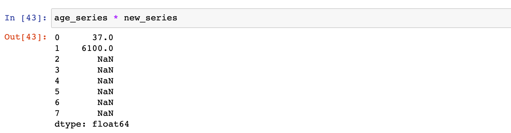
2. DataFrame 详解
2.1 创建 DataFrame
1）可以使用字典来创建DataFrame
peoples = pd.DataFrame({
'Name': ['Smart', 'David'],
'Occupation': ['Teacher', 'IT Engineer'],
'Age': [18, 30]
})
peoples
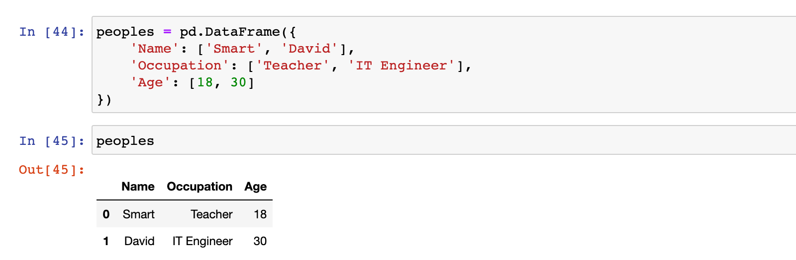
2）创建 DataFrame 的时候可以使用colums参数指定列的顺序，也可以使用 index 参数来指定行标签
peoples = pd.DataFrame({
'Occupation': ['Teacher', 'IT Engineer'],
'Age': [18, 30]
}, columns=['Age', 'Occupation'], index=['Smart', 'David'])
peoples
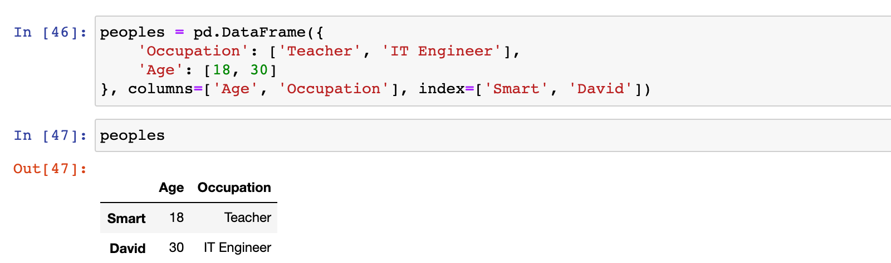
3）也可以使用嵌套列表创建 DataFrame，并使用 columns 参数指定列标签，使用 index 参数来指定行标签
peoples = pd.DataFrame([
['Teacher', 18],
['IT Engineer', 30]
], columns=['Occupation', 'Age'], index=['Smart', 'David'])
peoples
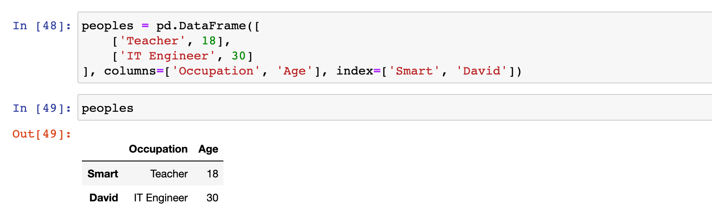
2.2 DataFrame 常用操作
常用属性和方法：
| 属性或方法 | 说明 |
|---|---|
df.shape |
查看 DataFrame 数据的形状 |
df.size |
查看 DataFrame 数据元素的总个数 |
df.ndim |
查看 DataFrame 数据的维度 |
len(df) |
获取 DataFrame 数据的行数 |
df.index |
获取 DataFrame 数据的行标签 |
df.columns |
获取 DataFrame 数据的列标签 |
df.dtypes |
查看 DataFrame 每列数据元素的类型 |
df.info() |
查看 DataFrame 每列的结构 |
df.head(n) |
获取 DataFrame 的前 n 行数据，n 默认为 5 |
df.tail(n) |
获取 DataFrame 的后 n 行数据，n 默认为 5 |
1）常用属性和方法演示
scientists.shape
scientists.size
scientists.ndim
len(scientists)
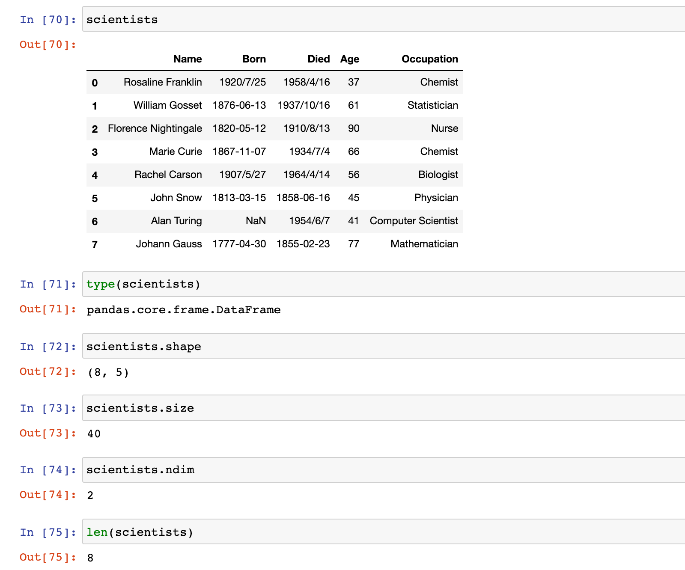
scientists.index
scientists.columns
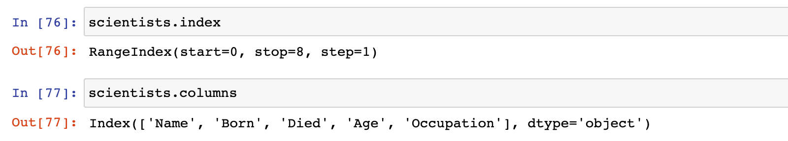
scientists.dtypes
scientists.info()
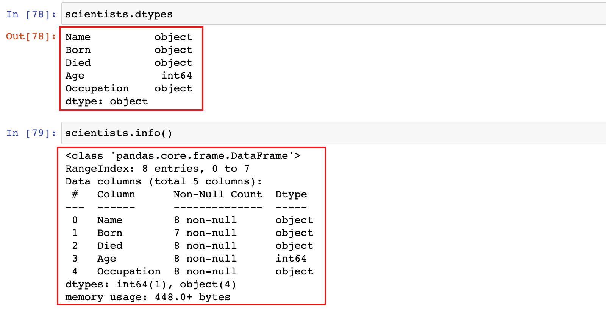
Pandas与Python常用数据类型对照：
Pandas类型 Python类型 说明 object string 字符串类型 int64 int 整形 float64 float 浮点型 datetime64 datetime 日期时间类型，python中需要加载
scientists.head()
scientists.tail()
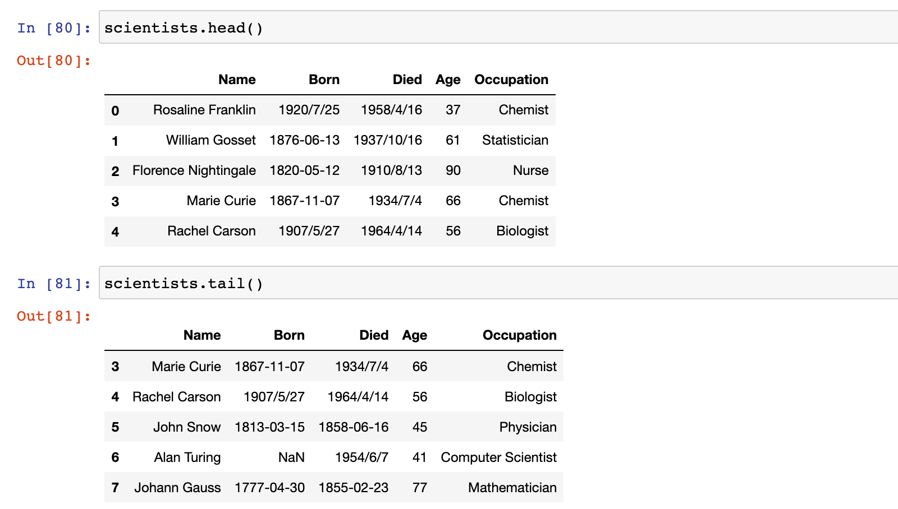
常用统计方法：
| 方法 | 说明 |
|---|---|
s.max() |
计算 DataFrame 数据中每列元素的最大值 |
s.min() |
计算 DataFrame 数据中每列元素的最小值 |
s.count() |
统计 DataFrame 数据中每列非空(NaN)元素的个数 |
s.describe() |
显示 DataFrame 数据中每列元素的各种统计值 |
1）max、min、count 演示
scientists.max()
scientists.min()
scientists.count()
scientists.size
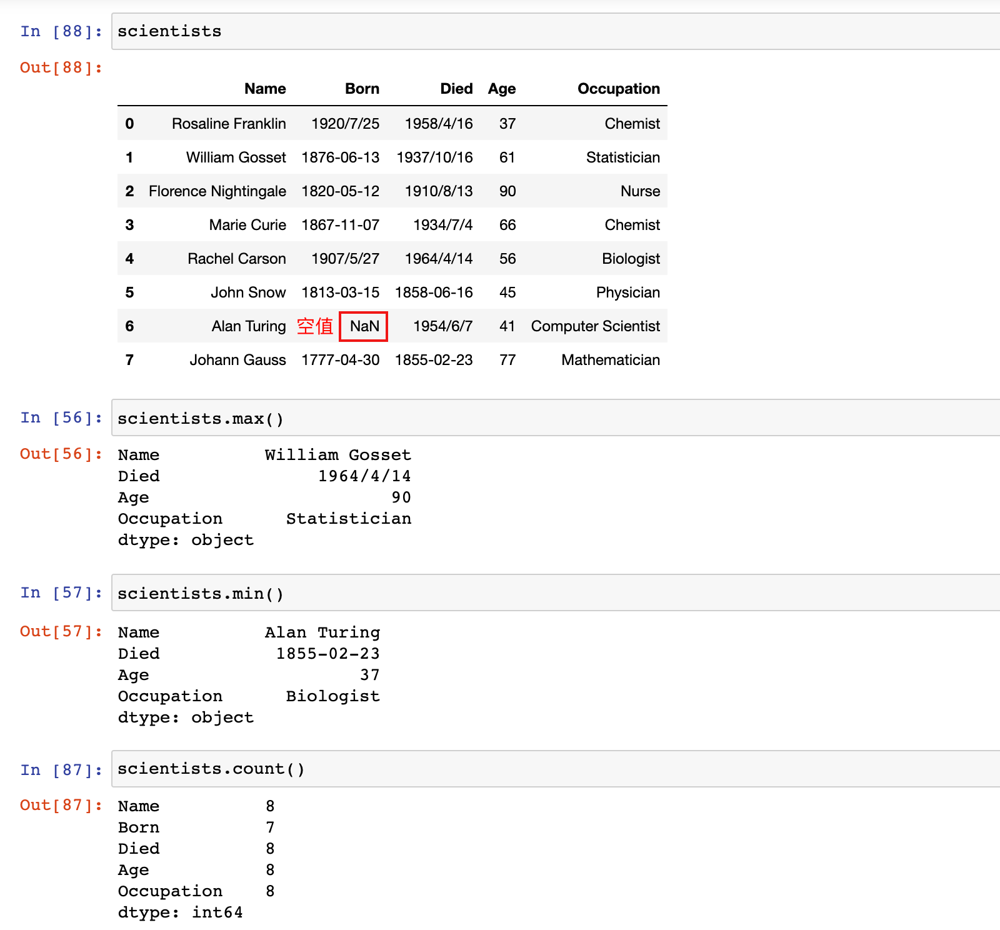
2）describe 演示
scientists.describe()
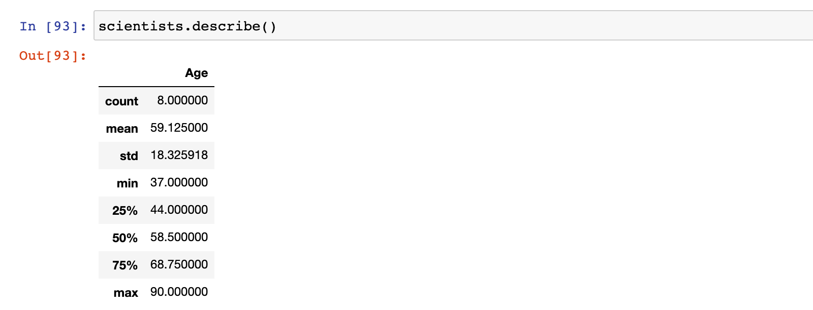
注意：describe 方法默认只显示数值型列的统计信息，可以通过 include 参数设置显示非数值型列的统计信息
import numpy as np
scientists.describe(include=[np.object_])
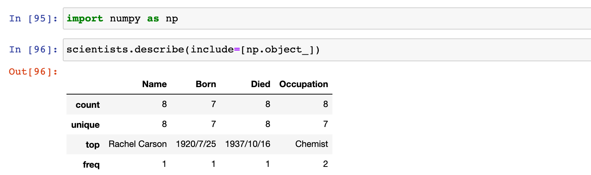
2.3 bool 索引
DataFrame 支持 bool 索引，可以从 DataFrame 获取 bool 索引为 True 的对应行的数据。
bool_values = [False, True, True, True, False, False, False, True]
scientists[bool_values]
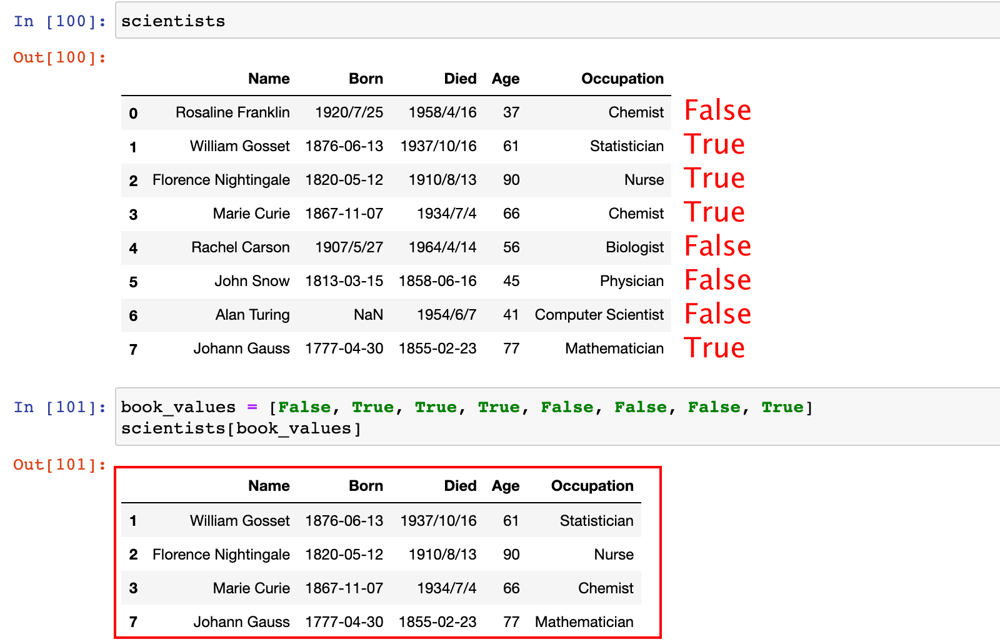
应用：获取 scientists 中 Age 大于平均值的科学家信息
# 应用：获取 scientists 中 Age 大于平均值的科学家信息
scientists[scientists['Age'] > scientists['Age'].mean()]
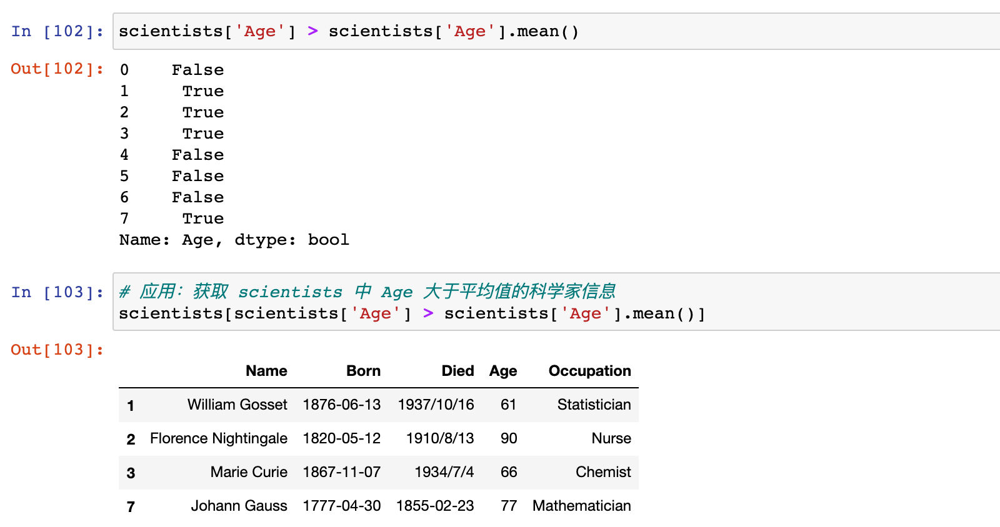
2.4 DataFrame 运算
| 情况 | 说明 |
|---|---|
DataFrame 和 数值型数据运算 |
DataFrame 中的每个元素和数值型数据逐一运算， 返回新的 DataFrame |
DataFrame 和 另一 DataFrame 运算 |
两个 DataFrame 中相同行标签和列标签的元素分 别进行运算，若不存在相同的行标签或列标签， 计算后的结果为 NaN，最终返回新的 DataFrame |
DataFrame 和 数值型数据运算：
# DataFrame 和 数值型数据运算
scientists * 2
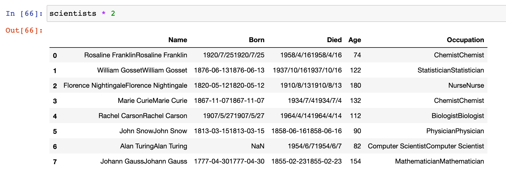
DataFrame 和 另一 DataFrame 运算：
# DataFrame 和 另一 DataFrame 运算
scientists + scientists
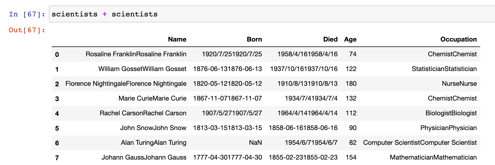
# DataFrame 和 另一 DataFrame 运算
scientists + scientists[:4]
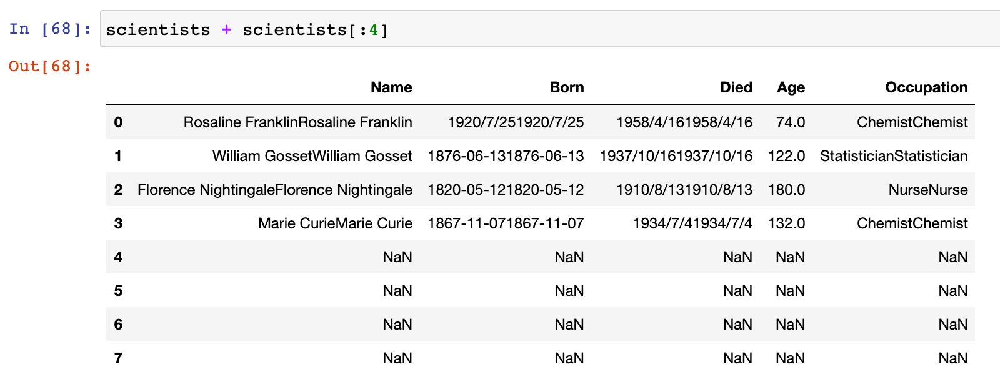
2.5 行标签和列表签操作
2.5.1 加载数据后，指定某列数据作为 DataFrame 行标签
加载数据文件时，如果不指定行标签，Pandas会自动加上从0开始的行标签；
可以通过df.set_index('列名')的方法重新将指定的列数据设置为行标签
scientists = pd.read_csv('./data/scientists.csv')
scientists
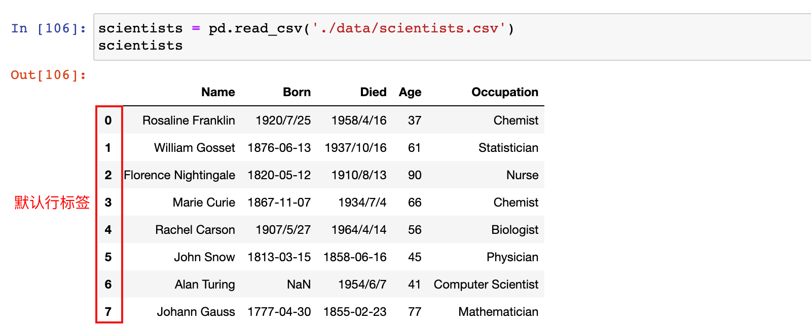
# 设置 Name 列的值作为行标签
scientists_df = scientists.set_index('Name')
scientists_df
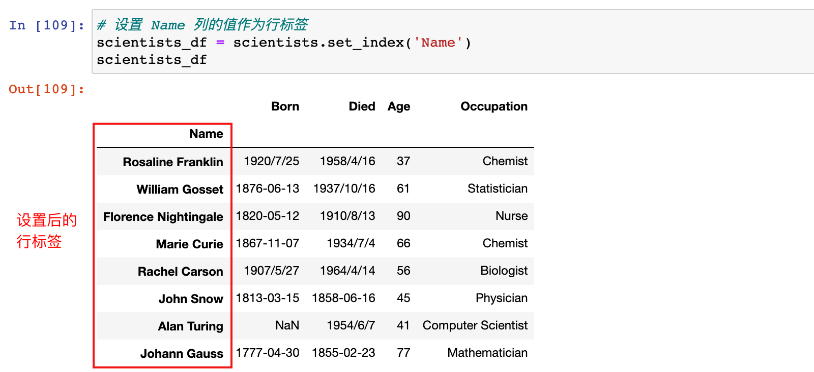
设置行标签之后，可以通过 reset_index 方法重置行标签：
# 注意：reset_index返回的是一个新的 DataFrame
scientists_df.reset_index()
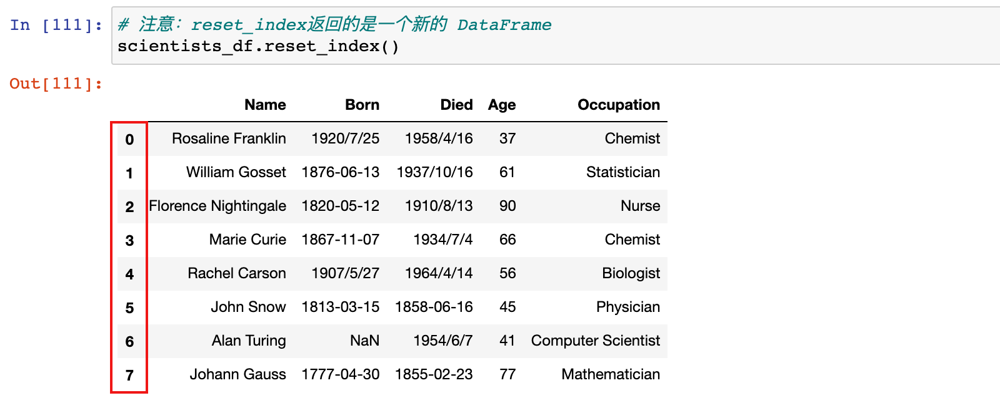
2.5.2 加载数据时，指定某列数据作为 DataFrame 行标签
加载数据文件的时候，可以通过 index_col 参数，指定使用某一列数据作为行标签，index_col 参数可以指定列名或列位置编号
1）加载 scientists.csv数据时，将 Name 列设置为行标签
pd.read_csv('./data/scientists.csv', index_col='Name')
或
pd.read_csv('./data/scientists.csv', index_col=0)
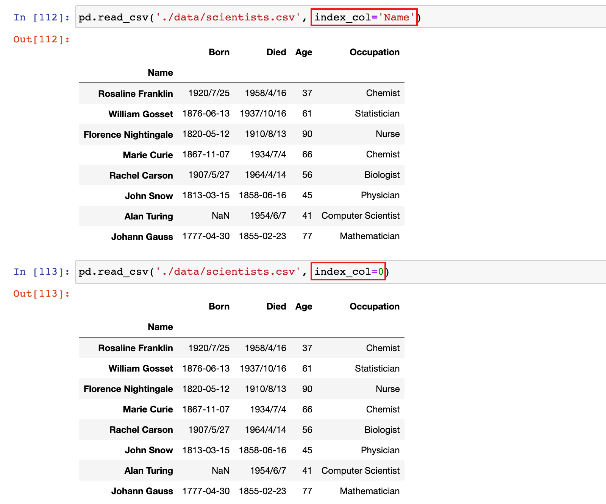
2.5.3 加载数据后，修改 DataFrame 行标签和列标签
| 方式 | 说明 |
|---|---|
df.rename(index={'原行标签名': '新行标签名', ...}, columns={'原列标签名': '新列标签名', ...}, inplace=False) |
修改指定的行标签和列标签，rename修改后默认返回新的 DataFrame；如果将inplace参数设置为True，则直接对原 DataFrame 进行修改 |
df.index = ['新行标签名1', '新行标签名2', ...]df.columns = ['新列标签名1', '新列标签名2', ...] |
修改DataFrame的行标签和列标签，直接对原 DataFrame 进行修改 |
1）加载 scientists.csv数据集
scientists = pd.read_csv('./data/scientists.csv', index_col='Name')
scientists

2）使用 rename 修改行标签和列标签
index_name = {'Rosaline Franklin': 'rosaline franklin', 'John Snow': 'john snow'}
columns_name = {'Born': 'born', 'Age': 'age'}
# 注意：rename 修改之后，返回的是一个新的 DataFrame
scientists.rename(index=index_name, columns=columns_name)
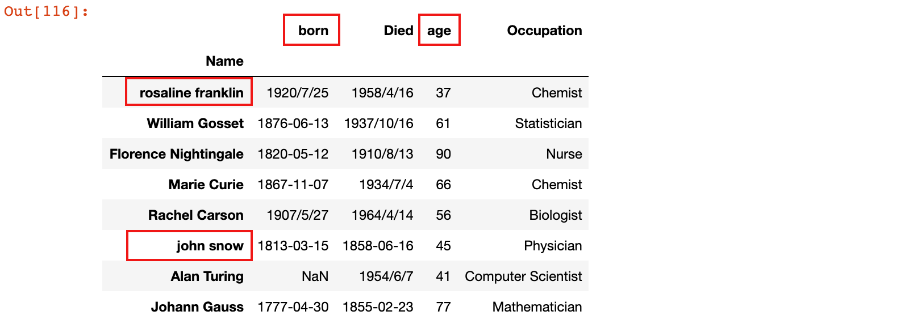
3）使用 df.index 和 df.columns 分别修改行标签和列标签
# 修改行标签
scientists.index = ['rosaline franklin', 'William Gosset', 'Florence Nightingale',
'Marie Curie', 'Rachel Carson', 'john snow', 'Alan Turing',
'Johann Gauss']
# 修改列标签
scientists.columns = ['born', 'Died', 'age', 'Occupation']
scientists
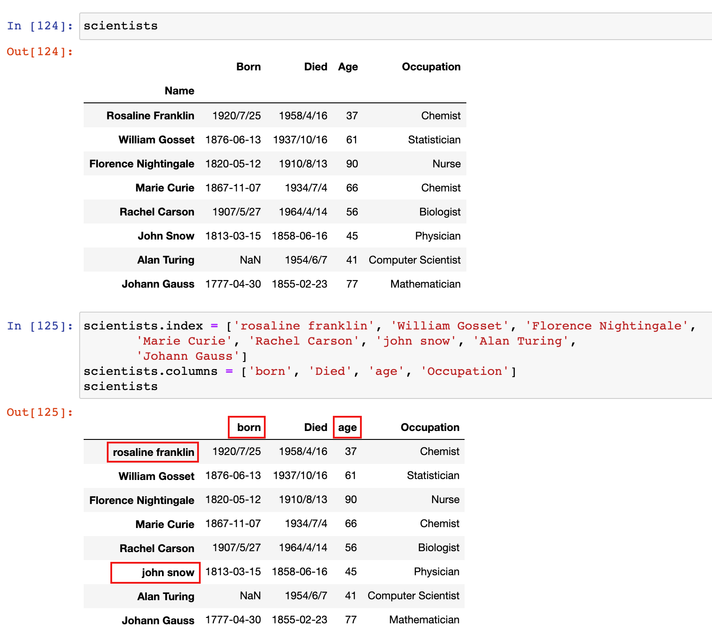
2.5.4 加载数据后，重新索引 DataFrame 数据
| 方式 | 说明 |
|---|---|
df.reindex(index=['行标签1', '行标签2', ...], columns=['列标签1', '列标签2', ...]) |
重新索引的行标签和列标签，只提取原 DataFrame 中指定的行和列，并且原 DataFrame 中不存在的行标签和列表签会自动添加新行或新列，默认填充为NULL，返回新的 DataFrame |
1）加载 scientists.csv数据集
scientists = pd.read_csv('./data/scientists.csv', index_col='Name')
scientists
2）重新索引 DataFrame 数据
# 重新索引 DataFrame 数据
scientists.reindex(index=['William Gosset', 'Florence Nightingale',
'Marie Curie', 'Rachel Carson', 'Hua Luogeng'],
columns=['Born', 'Age', 'Occupation', 'Country'])

总结
- 掌握Series的常用属性及方法
- 掌握DataFrame的常用属性及方法
- 掌握DataFrame行列标签的设置
- df.set_index、df.reset_index
- df.rename
- df.index、df.columns
- df.reindex